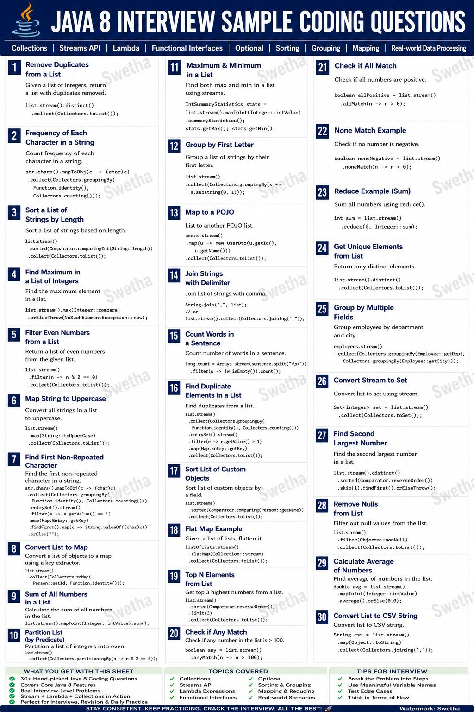
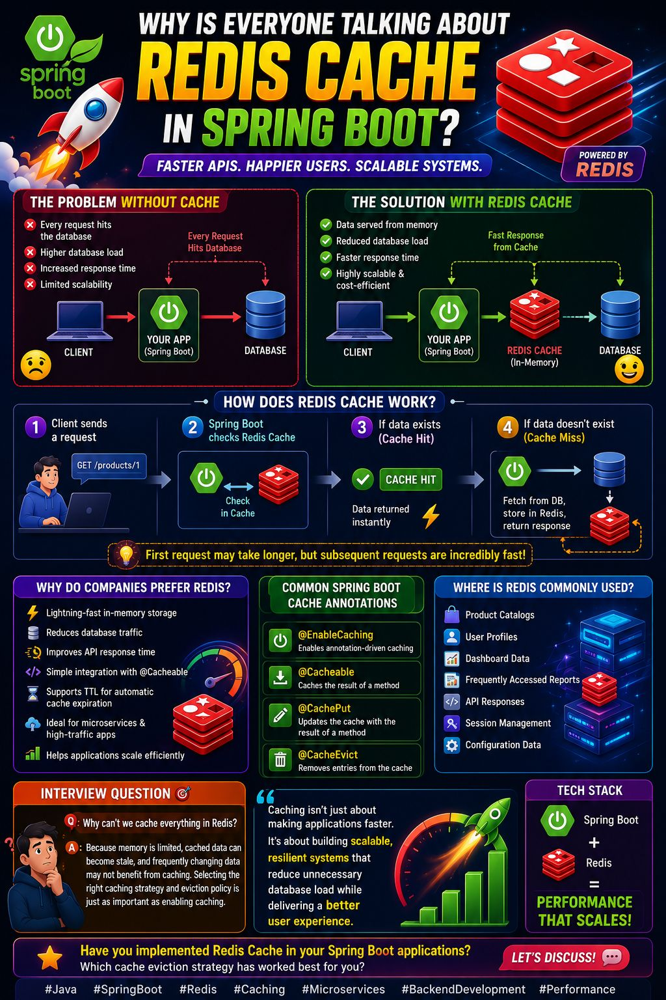

Java Runtime and Language
Start with JVM management, collections, streams, immutability, concurrency, and memory behavior.
- JVM Management
- Java Streams
- Concurrency
Static Resource Collection
Every poster and PDF in this folder has been turned into a browsable study deck, grouped by topic and arranged as a practical interview-prep path.
The assets naturally form a senior backend review sequence: Java fundamentals first, then Spring, APIs, data, production hardening, and system design.
Start with JVM management, collections, streams, immutability, concurrency, and memory behavior.
Move into bean lifecycle, auto-configuration, AOP, transactions, caching, and observability.
Review REST design, gateways, HTTP methods, JWT, and secure request routing.
Cover Hibernate N+1, database performance, Redis, Kafka, and collection tradeoffs.
Finish with resiliency, production breaks, microservices, load balancing, and system design.
The anonymous image file was read visually and titled here as Java 8 Interview Sample Coding Questions.

Interview Drill
This poster is a compact stream API workout: distinct, grouping, sorting, mapping, reducing, matching, flatMap, duplicate detection, CSV conversion, and common collector patterns.
Use it after reviewing Java Streams and before service-layer coding practice. It is the bridge between syntax knowledge and interview-ready muscle memory.
Click any poster to inspect it larger. The filters in the left rail stay available while you review.

Architecture vocabulary for distributed backend systems.
Hands-on Stream API coding drills.

Messaging, event streaming, and consumer patterns.

Routing, auth, traffic control, and edge responsibilities.

Failure response and production debugging mindset.

Runtime, memory, and operational JVM basics.

Hashing, buckets, collisions, and lookup behavior.

REST fundamentals and endpoint design.

Continuation topics for REST API design.

Object safety, defensive design, and thread-friendly models.

Error modeling and service boundary behavior.

Container lifecycle and dependency injection timing.

How Spring Boot wires defaults and conditions.

Production-grade API conventions and contracts.

Authentication, authorization, and token-based APIs.

Transaction boundaries, rollback behavior, and consistency.

Cache behavior, invalidation, and performance tradeoffs.

Health, metrics, diagnostics, and operational visibility.

Timeouts, retries, fallback thinking, and failure isolation.

Query efficiency, indexes, bottlenecks, and tuning.

Leak symptoms, heap analysis, and prevention patterns.

Threading, synchronization, and concurrent execution.

ORM query pitfalls and performance correction.

End-to-end readiness for resilient services.

Threads, execution flow, and concurrent code basics.

Asynchronous composition in Java.

Stream pipelines, transformations, and collection operations.

HTTP request semantics and API query behavior.

Choosing the right collection for the job.

Collection types, tradeoffs, and usage patterns.

Cache and data-structure server patterns.

Cross-cutting behavior and proxy-based interception.

Core concepts for Spring Boot services.

Foundational system design vocabulary.

Horizontal scale, capacity, and growth planning.

Traffic distribution and high-availability routing.

Gateway patterns in distributed systems.
These two larger references sit beside the visual deck: one for serverless AWS depth, one for AI/RAG architecture vocabulary.
Official AWS Lambda reference material. Best used after the Lambda and event-driven architecture posters.
Reference material for retrieval-augmented generation concepts, useful when connecting backend systems with AI search and knowledge workflows.